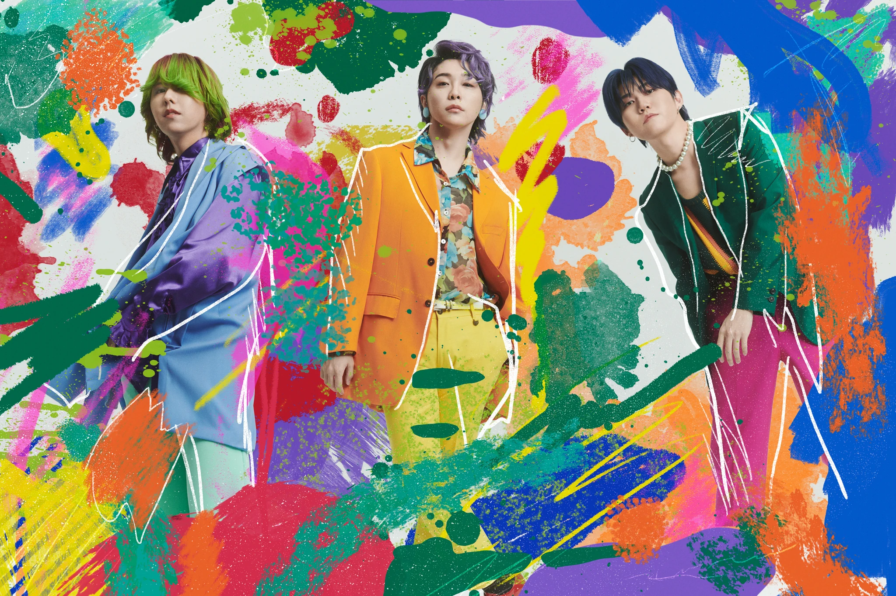
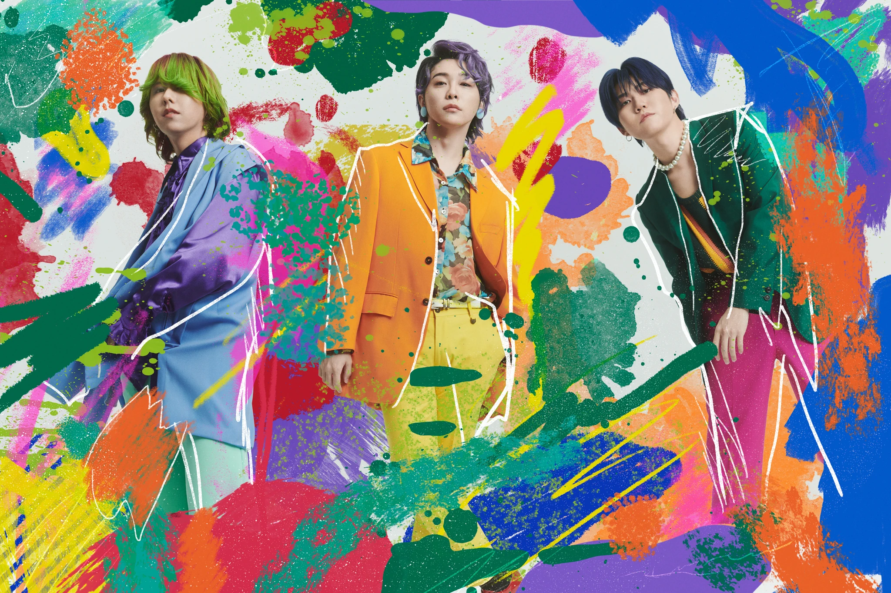
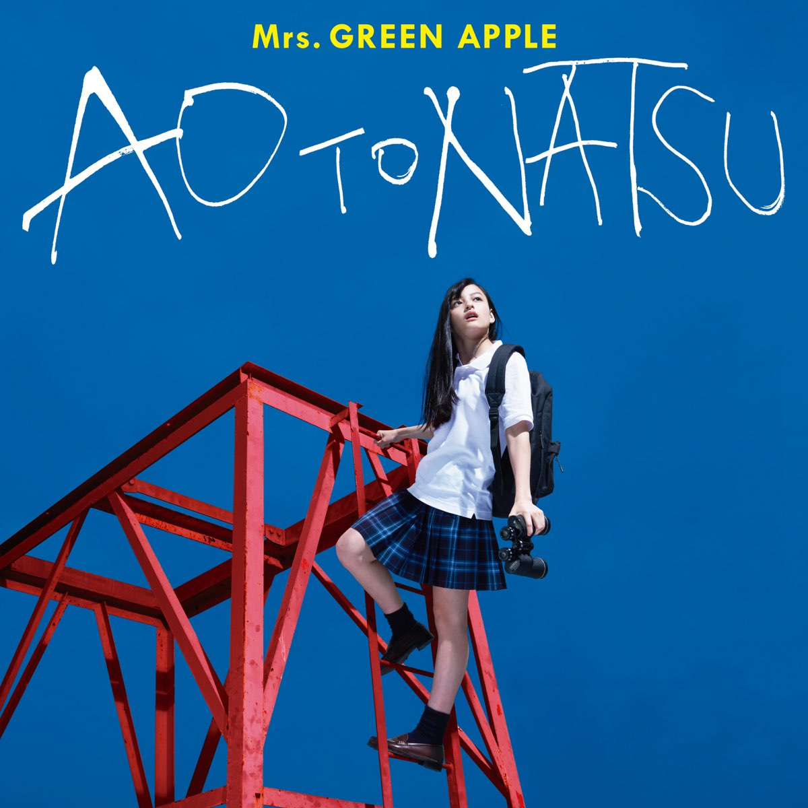

Mrs. GREEN APPLE
G Major / 109.976 BPM
曲「ダンスホール(Dance Hall)」はMrs. GREEN APPLEによる楽曲で、人生の challenges の中で楽観的なメッセージを伝え、幸福を見つけることを歌っています。歌詞は、ダンスホールを世界の隠喩とし、歌手が愛を通じて慰めと力を見出す場所として描かれています。最初のヴァースでは、歌手は自分に対して恨みを抱く人々がいるかもしれないと認めつつ、何かに頼りすぎてしまっていることに気付かされます。プリコーラスでは、苦労にだけ焦点を当てることで幸福を見落とす傾向について考えています。目の前にあるものを真に理解する重要性が強調されています。コーラスでは、このダンスホールのような世界では、愛と大切な人の存在によって、愛を理解し経験することができるので、すべてがうまくいくだろうと再確認されます。悲しみは避けられないものの、感謝の気持ちと見つけた幸福を数えることを選びます。
2番では、時折自信を失う夢を持つ人々を認識しつつ、自分自身に真実であることの重要性が強調されます。プリコーラスでは、本物であり、他人の意見を気にせずに成長し、心の闘いに打ち勝つことが可能であると示唆されています。コーラスは繰り返され、最終的にはこのダンスホールのような世界ではすべてがうまくいくだろうという考えが強調されます。歌詞は、心から愛を探し求め、大切な人の傍らで歌い続ける願いを表現しています。批判に直面し感情的に疲れているにもかかわらず、歌手は他の人を笑顔にするために、不器用でも笑顔と笑い続けることを決意します。
インストゥルメンタルのブリッジは、最終的なコーラスの繰り返し前に音楽的な間奏となり、ダンスホールのコンセプトのエネルギッシュで楽観的な性質を強調します。アウトロでは、すべてがこのダンスホールのような世界ではうまくいくだろうというメッセージが強調され、歌手は聴衆の幸福のためにこの愛を歌い続けることを誓います。歌詞は、聴衆の笑顔が歌手自身の太陽であり、ダンスホールが主人公の周りを回ると表現されています。全体として、曲「ダンスホール（Dance Hall）」は人生の喜びと愛に抱きしめ、困難な時期でもポジティブな見方を維持することを奨励しています。愛と自己受容を通じて、人は人生のダンスホールを航海し、愛を歌い続けることができると示唆しています。


The song "ダンスホール (Dance Hall)" by Mrs. GREEN APPLE conveys a message of optimism and finding happiness in the midst of life's challenges. The lyrics depict a dance hall as a metaphor for the world, where the singer finds solace and strength through love. In the first verse, the singer acknowledges that there may be people who hold resentment towards them, but they have become too dependent on someone's affection without realizing it. The pre-chorus reflects on the tendency to overlook happiness by focusing solely on hardships. It emphasizes the importance of appreciating the things right in front of us. The chorus reassures that everything will be okay in this dance hall-like world because love and the presence of the person they cherish enables them to understand and experience love. Even though sadness is inevitable, they choose to count their blessings and the happiness they find.
In the second verse, the lyrics acknowledge the dreamers who occasionally lose confidence but emphasize the importance of staying true to oneself. The pre-chorus suggests that personal growth and overcoming mental struggles are possible by being authentic and not worrying about others' opinions. The chorus repeats, highlighting the idea that ultimately, everything will be okay in this dance hall-like world. The lyrics express the desire to search for love wholeheartedly beside the person they cherish. Despite facing criticism and feeling emotionally drained, the singer will continue to smile and laugh, even if they are clumsy, in order to make others smile as well.
The instrumental bridge serves as a musical interlude before the final repetition of the chorus, emphasizing the energetic and optimistic nature of the dance hall concept. The outro reinforces the message that everything will be okay in this dance hall-like world, and the singer will keep singing this love for the sake of the listeners' happiness. The lyrics express that the listener's smile is the singer's own personal sunshine, and the dance hall revolves around them as the main character. Overall, the song "ダンスホール (Dance Hall)" encourages embracing the ups and downs of life, finding joy in love, and maintaining a positive outlook even during challenging times. It suggests that through love and self-acceptance, one can navigate the dance hall of life and continue to sing their love.